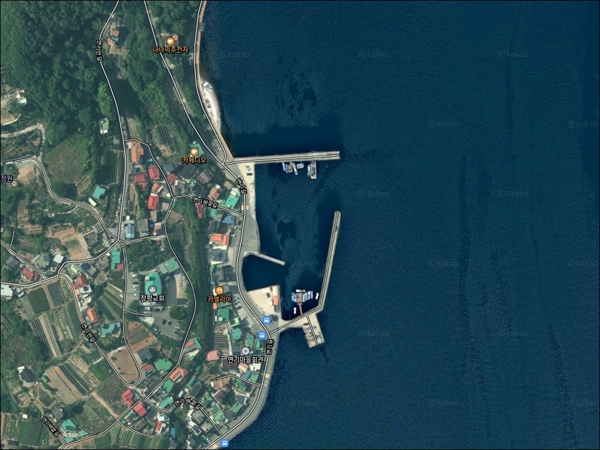
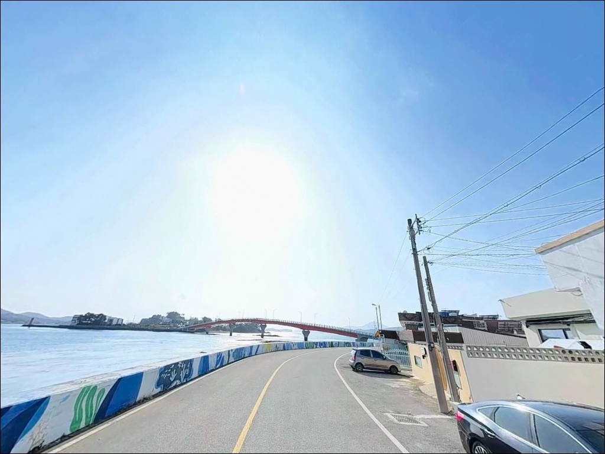
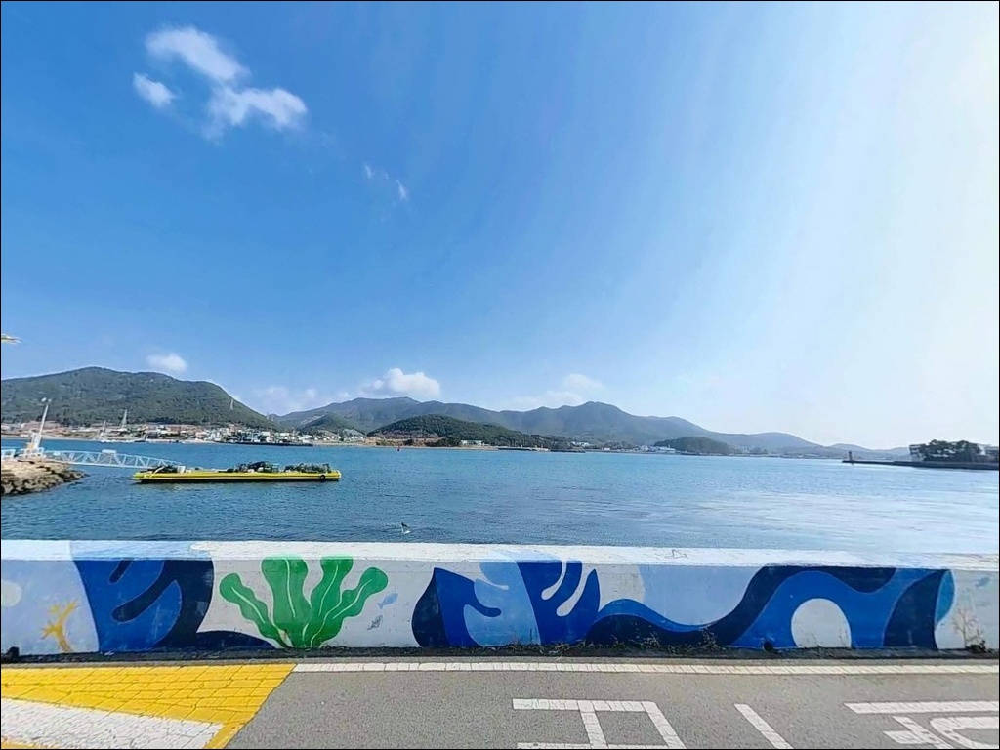
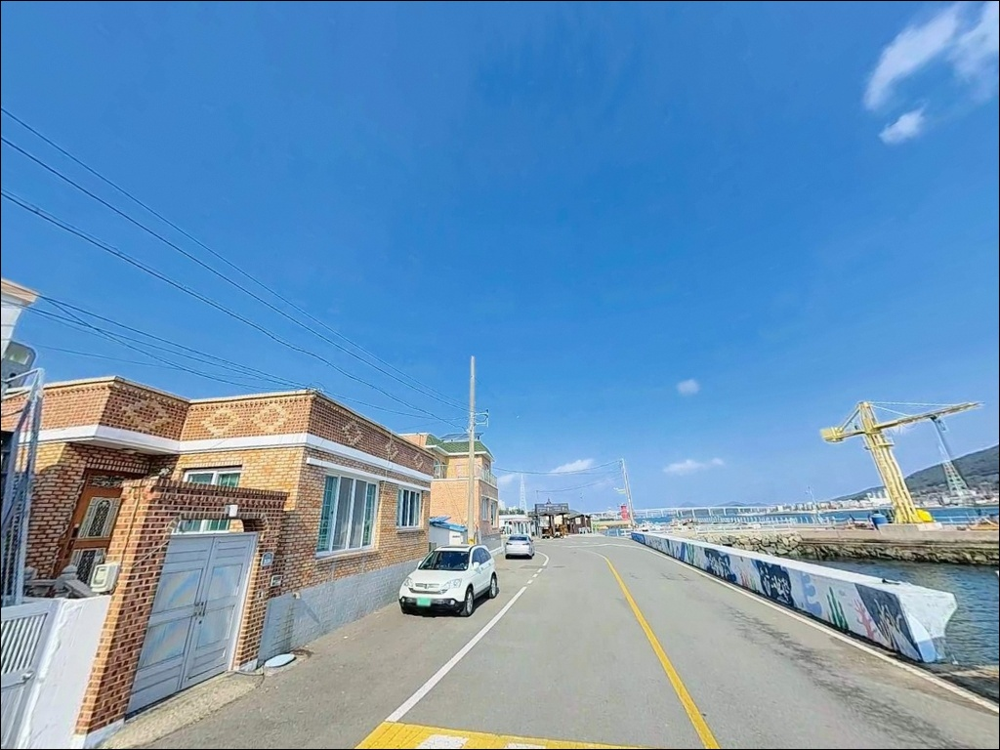
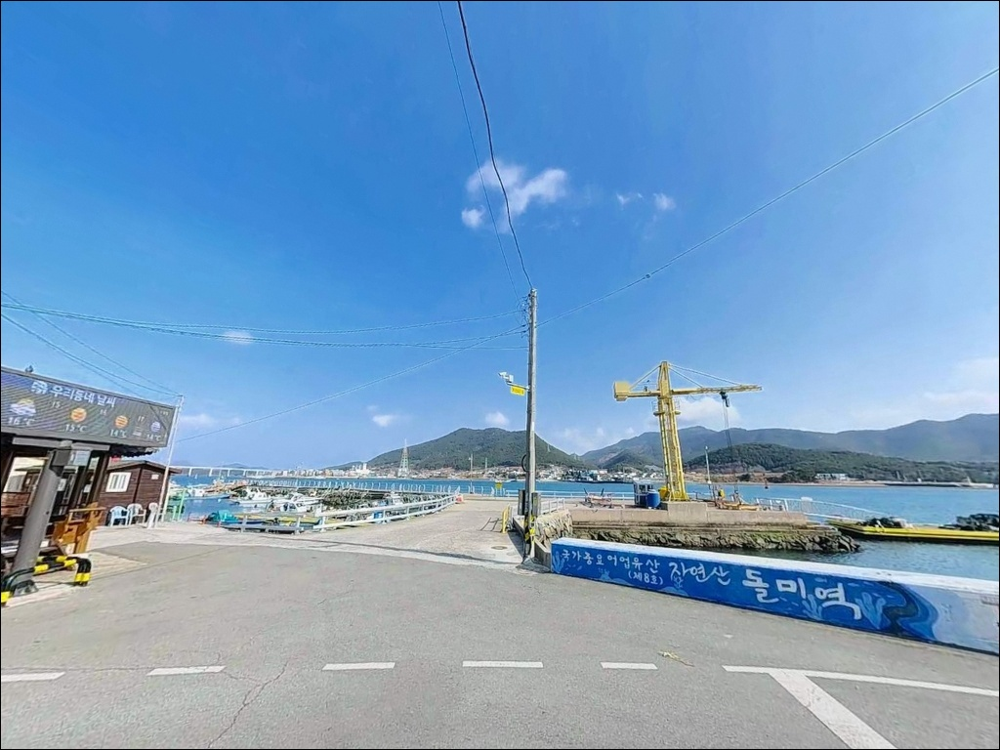
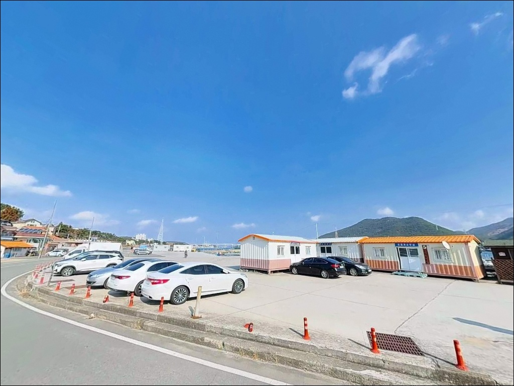
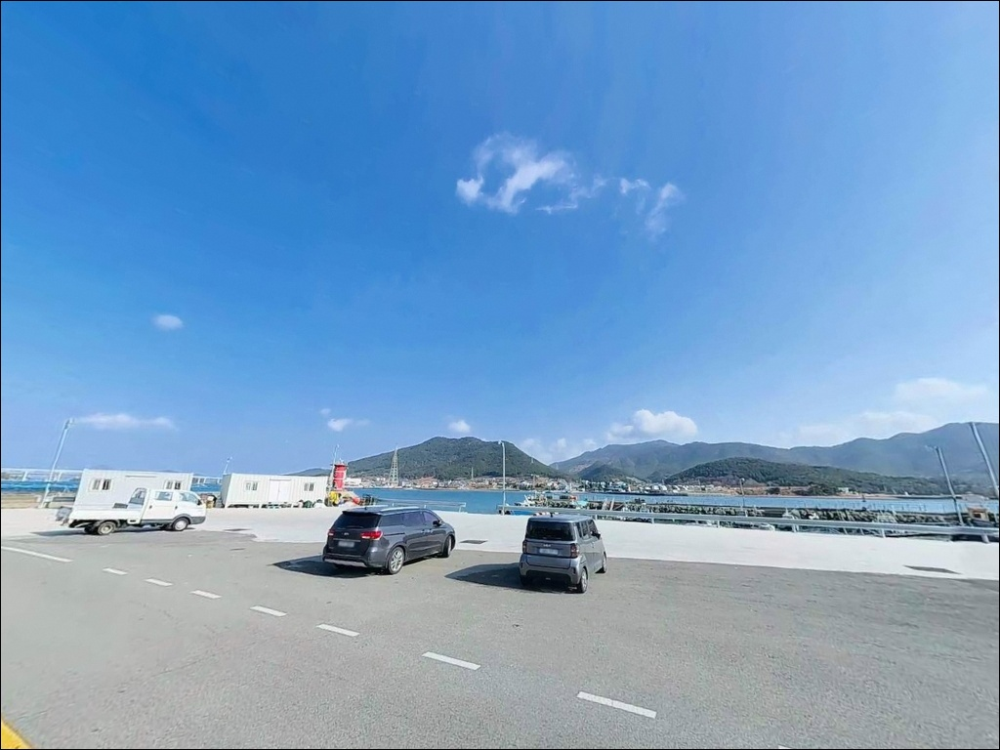
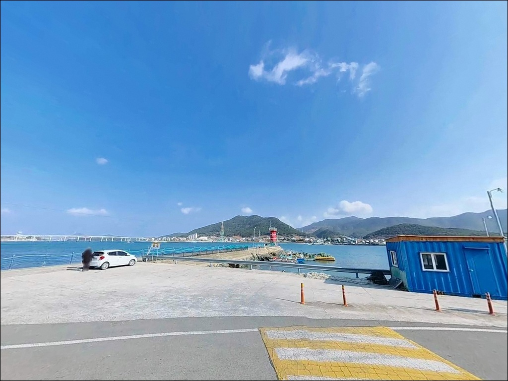
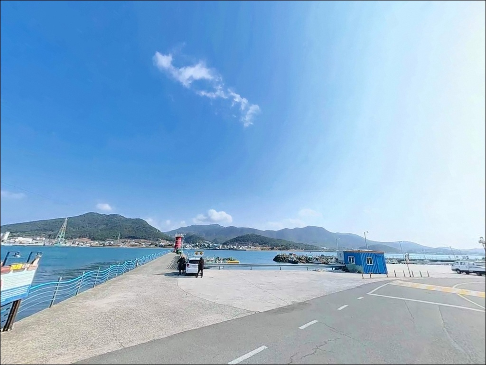

사리 물때에 들어가면 채비 다 떠내려가는 통영 연기항 찌낚시
이 페이지에는 광고(제휴 링크 포함)가 있으며, 광고 링크를 통해 구매하면 운영자가 판매 수익 또는 수수료를 받을 수 있습니다. 포인트 사진: 카카오맵 스카이뷰·로드뷰. 이 페이지의 지도·사진 이미지는 카카오맵의 실제 서비스 이미지와 다를 수 있습니다.


포인트 안내
연기항
경남 통영시 용남면 장평리 991-2
견내량 물때를 확인하지 않고
사리 전후에 연기항에 진입하면
어떤 채비를 써도 조류를 버티기 어렵습니다.
수로 폭이 좁아 조석 전환 시 흐름이
빠르게 집중되는 것이 이 해역의 구조이며,
물때 계산이 조과보다 먼저인 포인트입니다.
통영과 거제 사이 견내량 협수로 서쪽 연안,
경남 통영시 용남면 장평리에 위치한 연기항은
2003년 어촌정주어항으로 지정된 소형 어항입니다.
방파제 외항 직벽과 넓은 선착장 공터를 갖추고 있어
낚시와 차박을 한 자리에서 병행할 수 있는
구조 조건을 갖춘 포인트입니다.
이 글은 연기항의
진입 동선, 차박 여건, 물때 판단 기준,
낚시 스타일별 공략 조건에 집중합니다.
조황 단정이나 특정 어종 보장은
이 글의 범위에 포함되지 않습니다.

1. 포인트 위치 및 진입 동선 분석
통영 방향에서 국도 14호선을 타고
거제대교 방면으로 이동한 뒤
용남면 장평리 방향으로 분기하면
연기항까지 연결되는 포장도로가 이어집니다.
연기길과 연기안길을 통해 접근하는 구조이며
도로 폭은 4~6m 수준으로
승용차 및 캠핑카 진입이 가능한 수준입니다.
선착장 내부 부지가 넓은 아스팔트 공터로
조성되어 있어 대형 차량의 진입과
회차가 자유롭습니다.
주차 후보지는 방파제 시작 지점 벽면을 따라
차를 세우는 구간과
선착장 내 공터 두 곳으로 나뉘며,
낚시 자리 바로 옆에 차를 세우는
차낚 여건이 갖춰져 있습니다.
마을회관 인근 공터도
회차 및 보조 주차 공간으로 활용됩니다.
어선 계류 구간과 겹치지 않도록
정박 동선을 먼저 확인하고
자리를 잡는 것이 기본입니다.

2. 차박 환경 평가 및 야간 체류 여건
연기항은 항만 내 가로등이
현대화되어 있어 야간 활동 시
시야 확보에 큰 어려움이 없습니다.
방파제 외항 방향까지 조명이 미치는 구조로
야간 낚시 환경으로는 상대적으로 양호한 편입니다.
선착장 공터는 넓어 차량 간 거리를
충분히 확보할 수 있어 프라이버시 여건은
좋은 편입니다.
다만 연기마을 민가가 인접해 있어
야간 엔진 공회전이나 조명이
마을 쪽으로 향하지 않도록
소음과 불빛 방향을 관리하는 배려가 필요합니다.
견내량 수로 방향 풍향의 영향을 받는
위치이므로 기상 예보에서 풍속이 강한 날에는
바람 취약 방향을 미리 파악하는 편이 좋습니다.
차박을 메인으로 삼는 경우
넓은 공터 덕분에 공간 확보 걱정은 없지만,
야간 소음 관리가
체류 여건의 핵심 변수입니다.


3. 주변 편의시설 및 인프라 현황
연기항에서 차량으로 5~10분 거리면
통영 시내권 대형 마트와 낚시점에 닿습니다.
채비 보충이나 식재료 준비는
현장 도착 전에 미리 마치는 편이
이동 동선에서 가장 효율적입니다.
거제대교 방면으로 이동하면
반경 3km 이내에 편의점과 주유소가 확인됩니다.
출발 전 통영 죽림지구 방향에서
보급을 마치고 진입하는 경로가
가장 효율적인 동선입니다.
응급 상황 발생 시에도
통영 시가지 방향으로 빠르게 이동할 수 있는
접근성이 양호한 포인트입니다.

4. 방문 전 준비사항 및 체크 포인트
연기항 방문에서 가장 먼저 해야 할 것은
물때 확인입니다.
견내량은 조류가 빠르기로 알려진 수로로,
간조·만조 전환 시 흐름이
매우 빠르게 집중됩니다.
바다타임에서 장평리 기준 물때를 확인하고
조금 전후 또는 물돌이 직후 타이밍을
노려 출발 시각을 조정하는 것이
기본 전략입니다.
조류가 강한 수로 특성상 원투낚시에서는
채비가 빠르게 떠내려가는 상황이
자주 발생합니다.
30호 이상의 무거운 봉돌을 여분으로 준비하고,
에깅·찌낚시용 채비도
여유 있게 챙기는 것이 좋습니다.
기상청 해상 예보는
출조 당일 아침에 한 번 더 확인하는 것이
포인트 낭비를 막는 습관입니다.
선착장 끝단은 조류 변화가 큰 구간입니다.
야간 낚시 시 케미와 헤드랜턴은 필수이며,
구명조끼 착용은 기본 안전 조건입니다.
어선 계류 로프와 어구에
접촉하지 않는 자리 선정이 매너의 기본입니다.

5. 지형 기반 낚시 여건 분석
연기항의 핵심은 견내량 협수로입니다.
통영과 거제 사이를 구분하는 이 수로는
폭 180~400m의 좁은 구간으로,
조석에 따라 강한 조류가 남북으로
빠르게 전환되는 구조입니다.
수로 입구를 향해 뻗은 방파제 끝단은
조류가 집중되는 구간으로,
만조 시 수심 5~8m의 직벽이 형성됩니다.
외항 쪽은 발밑에서 바로 수심이
급격히 떨어지는 직벽 구조입니다.
선착장 전면은 사질과 여가 혼재된 바닥으로,
저서성 어종의 먹이 활동이
이루어지기 좋은 지형 조건입니다.
내항은 정박 위주의 수심이 완만한 구간으로
낚시 효율보다는
찌낚시 채비를 정리하는 대기 자리로
활용하는 편이 낫습니다.
견내량 조류는 간조·만조 전환 시
채비 컨트롤이 불가능할 만큼 빠르게 바뀌므로,
조금 전후 또는 물돌이 직후 타이밍이
이 포인트의 조과를 결정합니다.
바닥에는 해조류 서식 환경이 갖춰져 있어
해조류 주변을 선호하는 어종의
서식 가능성이 높은 해역입니다.
최신 조황은 출조 전에 꼭 검색해 보시기 바랍니다.


견내량 직벽 포인트에서 조과가 달라지는 낚시 조건
이 포인트에서 가장 잘 맞는 낚시는
찌낚시입니다.
외항 직벽을 타고 흐르는 조류에
채비를 태우는 전유동·반유동 방식이
견내량 수로 흐름과 맞습니다.
감성돔과 숭어의 회유로가 형성된 해역으로,
물돌이 직후 조류가 안정되는 타이밍에
입질 집중도가 높아집니다.
에깅도 이 포인트 지형에 잘 맞는 스타일입니다.
가을철 갑오징어와 주꾸미의 회유가 잦은 해역이며,
방파제 끝단 방향으로 캐스팅한 뒤
조류 방향 전환 직전후 타이밍을 노리는 방식이
이 수로 구조와 어울립니다.
야간에는 가로등 집어 효과로
풀치와 볼락 루어낚시가 활발하게 이루어지는
해역 패턴을 보입니다.
원투낚시는 선착장 및 방파제 정면
물골 방향으로 캐스팅하는 방식이
이 지형에 적합합니다.
수로 바닥 지형을 선호하는 도다리,
보리멸, 붕장어 계열 어종을
기대해 볼 수 있는 지형입니다.
조류가 강하므로
30호 이상 봉돌로 채비를 바닥에 고정하는
준비가 선행되어야 합니다.

7. 대안 포인트 및 플랜 B 동선
연기항 공간이 여의치 않거나
조류가 너무 강한 날에는
해간도 방파제가 첫 번째 대안입니다.
연기항에서 연륙교로 연결된 해간도는
차량 진입이 가능하며,
원투 및 루어낚시에 적합한
조용한 소규모 포인트입니다.
거리를 넓혀 연명항(산양읍, 약 5~7km)도
플랜B로 검토할 수 있습니다.
만지도·연대도로 향하는 배편 출발지로 알려진 곳으로,
방파제 낚시 구조가 연기항과 유사한
통영 어항 패턴을 가지고 있습니다.
규모가 크고 포인트 다양성이 높아
여러 낚시 방식을 동시에 시도하기 좋습니다.
차박 공간이 더 여유로운 환경을 원한다면
통영 거제대교 북측 용남면 해안도로변이
대안입니다.
도로 폭이 넓고 해안 조망이 열려 있어
승용차 차박 후보로 활용 가능합니다.

물때 하나 맞추면
연기항이 달리 보입니다
찌낚시와 에깅을 즐기는 낚시인이라면
연기항의 지형 조건은 잘 맞는 구조입니다.
견내량 협수로가 만드는 강한 조류와
직벽 외항의 깊은 수심이
복합 공략을 가능하게 하며,
선착장 공터가 넓어 낚시 자리 바로 옆에
차를 세워두는 차낚 방식이
이 포인트에 잘 어울립니다.
반면 물때 계산 없이 사리 전후에 진입하거나,
채비 준비 없이 현장에서 조류 세기를 마주하면
낚시 자체가 어려워지는 상황을
맞닥뜨릴 수 있습니다.
연기항 방파제 외항 끝단은 직벽 구조와
수심 급변 조건이 겹쳐
찌낚시·에깅·원투낚시를 복합 운용할 수 있는 포인트입니다.
물때 확인, 채비 여분 준비, 진입 타이밍 조정,
이 세 가지를 갖추고 간다면
기억에 남는 포인트가 될 수 있는 곳입니다.
가로등이 잘 갖춰진 선착장 공터에서
차를 세우고 조류 흐름 옆에 자리를 잡는 차박 낚시라면,
야간 소음 관리 하나만 신경 쓰면
낚시와 차박을 한 자리에서
조용히 즐길 수 있는 출조가 됩니다.